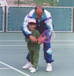

Novak Djokovic took a racquet in his hands for the first time when he was four years old. It was summer, and one of the best tennis coaches, Jelena Gencic, was holding a training camp. Every day Novak came by and watched the trainings. Then, one day, Jelena invited him on the court. He accepted, and started playing tennis.
“I knew he would become a champion. It was crystal clear to me. He was focused, conscientious, and above all, talented.” – Jelena Gencic
Although he enjoyed skiing, and even football, it was tennis that won him over – as well as Pete Sampras whose game on the court Novak fully absorbed.
“It was destiny. If something in your life is meant to be, then it’s meant to be!” – Novak Djokovic